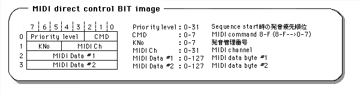

Return to previous page | Return to menu | Go to next page
Sint8
Sound function
Set data to be passed directly to the sound driver
Sint8 slSoundRequest(form, ...)
const char *form ;
“Form” indicates the individual size of the following data as character string data.
However, the first data is a function code and is not included in the character string.
Set the data to be passed directly to the sound driver.
The return value is -2 if an invalid character is found in the form string, or -1 if an attempt is made to set word data from an odd address.
Returns 0 if successful.
Example of use)
slSoundRequest("bbwwwbb" , SND_PCM_START , _Stereo|PCM16Bit , Level7<<5 ,StreamBuf >> 4 , StreamSize , Pitch , 0 , 0) ;
In this case, SND_PCM_START is a function code and is not included in the string.
_Stereo | PCM16Bit and Level7 << 5 are passed to the sound driver as byte data, and StreamBuf >> 4, StreamSize and Pitch are passed as word data to the sound driver.
Refer to “Table-1:“ slSndRequest ”Instruction List” in the attached document.
slSoundRequest
| Command Name | Command Data | Parameter Data |
|---|---|---|
| Reserved | 00 (hex) | Nothing |
| Sequence Start ( S - - ) |
01 | P1 0-7: Pronunciation management number P2 0-15 :Sequence bank number P3 0-127 :Sequence song number P4 0-31 :Priority level |
| Sequence Stop ( S - - ) |
02 | P1 0-7: Pronunciation management number |
| Sequence Pause ( S - - ) |
03 | P1 0-7: Pronunciation management number |
| Sequence Continue ( S - - ) |
04 | P1 0-7: Pronunciation management number |
| Sequence Volume ( S - - ) |
05 | P1 0-7: Pronunciation management number P2 0-127 :Sequence Volume P3 0-255 :Fade Rate For details, refer to the attached Fade in method and Feed out method. |
| Tempo Change ( S - - ) |
07 | P1 0-7: Pronunciation management number P2 - :dummy P3-P4 +32767-> --32768: Reference tempo (0000h) Relative Tempo value to Double at 1000h (4096), 1/2 when minus Will be |
| Map Change ( S P - ) |
08 | P1 0-255: Area number of the sound area map to be switched |
| MIDI direct control ( S - - ) |
09 | P1 00h-FFh :MIDI command word P2 00h-FFh :MIDI channel word P3 00h-7Fh :MIDI data 1 P4 00h-7Fh :MIDI data 2 For details, see the attached MID direct control BIT image |
| Volume analize start ( - - C ) |
0A | nothing (start volume acquisition) |
| Volume analize stop ( - - C ) |
0B | nothing (end volume acquisition) |
| DSP stop ( S P C ) |
0C | nothing |
| Sound all OFF ( S P C ) |
0D | nothing (all pronunciation slots stopped) |
| Sequence PAN ( S - - ) |
0E | P1 0-7: Pronunciation management number
P2 bit7 0 : Control OFF 1 : Control ON bit6-0 MIDI PAN data(00h-7Fh) 00h : Left<--->40h:Center<--->7Fh:Right (MIDI PAN is 128 steps, but SCSP PAN is Since there are 32 levels, the lower 2 bits of MIDI PAN data are Ignored. ) |
| CD-DA Level ( - - C ) |
80 | P1 00h-E0h :CD-DA level Left 8 levels of 00h (off), 20h, 40h, 60h, 80h, A0h, C0h, E0h, (MAX) P2 00h-E0h :CD-DA level Right 8 levels of 00h (off), 20h, 40h, 60h, 80h, A0h, C0h, E0h, (MAX) |
| DataCD-DA Pan ( - - C ) |
81 | P1 0-31: CD-DA pan Left 32 steps P2 0-31: CD-DA pan Right 32 stages |
| Total Volume ( S P C ) |
82 | P1 0-15: 16 steps when 0 is OFF |
| Effect Change ( S P C ) |
83 | P1 0-15 :Effect bank number |
| PCM start ( - P - ) |
85 | P1 bit7 0 : mono 1 : stereo bit6-5 not use bit4 0 : 16bitPCM 1 : 8bitPCM bit3-0 0-7: PCM stream playback number P2 bit7-5 0-7: Direct sound Level 8 stage bit4-0 0-31: Direct sound Pan 32 steps (ignored for Stereo) P3-P4 0000h-FFFFh: PCM stream buffer start address (Upper 16 bits of 20-bit data) P5-P6 0000h-FFFFh: PCM stream buffer size (Number of samples for 1ch) P7-P8 0000h-FFFFh :pitch word (SCSP pitch register data: Oct & FNS) P9 bit7-3 0-15: Effect in select (P9 = Rch or MONO) bit2-0 0-7: Effect send Level 8 stage P10bit7-30-15: Effect in select (P10 = Lch) bit2-0 0-7: Effect send Level 8 steps |
| PCM stop ( - P - ) |
86 | P1 0-7: Playback stop PCM stream playback number |
| Mixer change ( S P C ) |
87 | P1 0-15: Tone bank number P2 0-127 :Mixer number |
| Mixer parameter change ( S P C ) |
88 | P1 0-17 :Effect out select P2 bit7-5 0-7: Effect return Level 8th stage bit4-0 0-31: Effect Pan 32 stages |
| Hard check ( - - - ) |
89 | P1 0-5: Check item 0-DRAM 4Mbit read/write 1-DRAM 8Mbit read/write 2-SCSP MIDI 3-Sound source output (L / R) 4-sound source output (L) 5-sound source output (R) |
| PCM parameter change ( - P - ) |
8A | P1 0-7: PCM stream playback number P2 bit7-5 0-7: Direct sound Level 8 stage bit4-0 0-31: Direct sound Pan 32 steps P3-P4 0000h-FFFFh :pitch word P5 bit7-3 0-15: Effect in select (P5 = Rch or MONO) bit2-0 0-7: Effect send Level 8 stage P6 bit7-3 0-15: Effect in select (P6 = Lch) bit2-0 0-7: Effect send Level 8 steps |
| Reserved | 8B-FF | Nothing |
(S P C)
S: Command for Sequence playback, or command related to Sequence playback
P: Command for PCM stream playback, or command related to PCM stream playback
C: Command for CD-DA playback or commands related to CD = DA playback

Issue the sequence volume command before issuing the start command. Starts at Volume = 0 and fades in according to the fade rate until the specified sequence volume is reached. You can freely control the fade-in curve by using the sequence volume command twice (or more).
Issue a sequence volume command with Volume = 0. Start from the current sequence volume and fade out according to the fade rate until Volume = 0 is reached. You can freely control the fade-out curve by using the sequence volume command twice (or more).
Note 1)
Commands such as “MIDI direct control” and “PCM start” are closely related to the relationship between MIDI channels and timbres, and the specifications of DSP programs and mixers. Please give me.
Note 2)
A dedicated DSP program is required for analysis by frequency band for volume analysis, so download the dedicated DSP program with the Effect change command before issuing the command. DSP program is not required for main volume. In addition, since the data update at the time of volume acquisition is performed at intervals of 16 msec, read out the volume data at intervals of 16 msec or more.
Note 3)
When stereo is specified with PCM start, the first half from the beginning of the area specified by P3-P4 is processed as Rch and the second half as Lch. Make sure that the PCM stream buffer starts with an even address and has an even size. The start address of the PCM stream buffer is 20-bit data (00000h-FFFFFh)